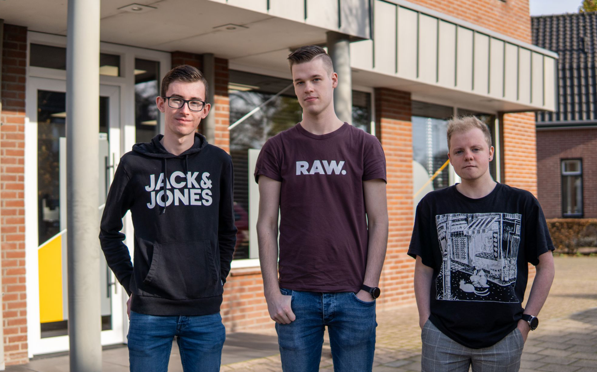

Ervaringen
Op deze pagina kun je al mijn ervaringen zien

Stage Agrippa
In 2021-2022 heb ik een half jaar stage gelopen bij het bedrijf Agrippa. Hier heb ik onder andere een Windows Server ingesteld, het netwerk opnieuw opgebouwd en klanten geholpen met computer problemen.

Netwerken instellen
Op school en stage ben ik veel bezig met netwerken. Ik vind het super leuk om netwerken te realiseren en compleet in te stellen. Denk bijvoorbeeld aan vlan routering, subnetting, acl's en beveiliging.

(Microsoft) Certificeringen
Tijdens mijn opleiding heb ik enkele certificaten behaald. Wil je zien welke ik heb behaald? Klik dan hier om naar mijn Credly profiel te gaan.

Raspberry Pi & Linux
Sinds 2021 heb ik thuis een Raspberry Pi en een mini pc. Hier staat Proxmox op met verschillende Docker containers. Ik draai hier onder andere Nextcloud op.